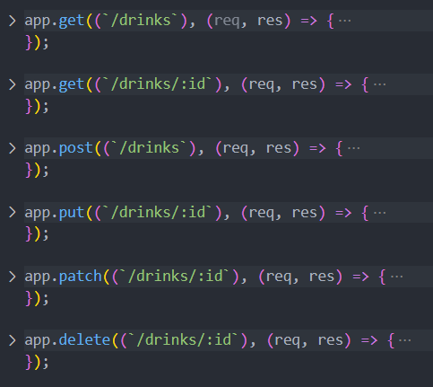
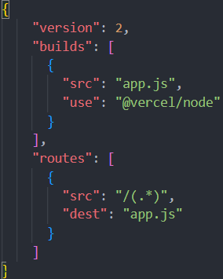

CRUDable REST API
Explained
We talked about setting up a full CRUDable REST API over the last few weeks and it all culminated in an assignment we had for drinks. For this we should know conventions, and be able to build it in express. The conventions goes as follows:
And this would be an example of how to the endpoints we should set up for it.

Example
So for an example all we need to do to set this up is, import express. Instantiate express. Set up a PORT for express. Enable body parsing so we can use post requests. And set up all of the routes as per the REST API conventions. These are the following collapsed routes.
The other notable things to add here from inside the collapsed routes, would be req.params.'nameOfParam', which could be id for example. We can then use that id to find the id in our array(which we used instead of a db).
The other notable part is req.body which we use to retrieve the body for a post/put/patch. For this instance it was fine to look at patch like put as per the industry most people just use put and never implement a patch for their API's. Put replaces the entire resource, while patch updates part of the resource. Personally i don't mind either way of setting it up, if i'm in a group i'll let other decide on points like that.
JavaScript
Date in JS
We had a big focus on the date object in JavaScript, followed by a small assignment.
For date there is some no tables things to go over.
new Date() this will provide us with UTC datetime.
Date().now this will provide us with Unix Epoch Time (Seconds since 1970 Jan. 1st).
Date() this will provide us with Central European Standard Time - CEST / GMT+1 - Localtime right here right now.
Then we talked about months in JavaScript. For months we had 2 solutions we created for finding the current month.
const currentMonth = new Date().toLocaleString('en-us', { month: 'long' });
This is a solution for finding the current month in english. The other solution is creating a months array and using that for months. We were told both solutions are equally correct even though i find it less time consuming to write the toLocateString version. Which is what i would prefer to use myself.
Then we talked about days which is a bit odd in JavaScript. It starts on Sunday so the index 0 is Sunday and then index 1 is Monday.
After this we talked about date object containing time aswell, second, hours etc. We then created an assignment. I created the assignment which was a time untill death calender, with options for smoking, fast food etc. reducing your life span and dynamically updating your time left to live.
Fetch
Explained
We talked about fetch in JavaScript. For fetch we just need to be able to write it without hesitation, which is not the worst. Later it will be explained in full when we break down asynchronous functions in JavaScript and write our own simulations of fetch.
For fetch we need to write fetch follow by (`www.example.com/placeToFetchFrom`). We then follow it by (response => response.json()). This first .then handles the data we recieve and parse it as json. That is then followed by a second .then(result => "something" = result.data) it recieves the data from the previous one and we can here use it for "something" we need to do with it. If we keep using data as our responses from our REST API we can always follow this convention of using .data which is commonly used.
Deployment
Explained
We talked about deployment where we used Vercel.
We can easily create an account on Vercel with google, and link out github to Vercel. The last step is that we need a vercel.json file in our project that contains the information which Vercel needs. I have an example of the one i used for our Time project here.
We also had the option to use github pages, but i had never used Vercel before so i saw it as an opportunity to learn something new, as i had used github pages many times before.